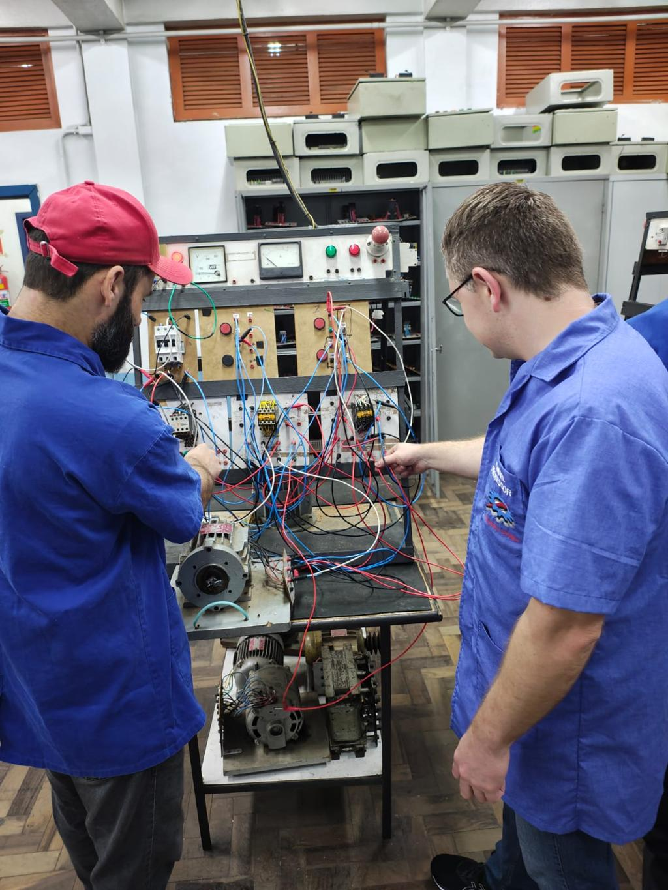
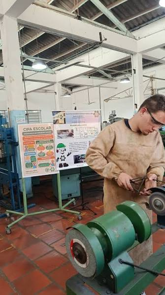
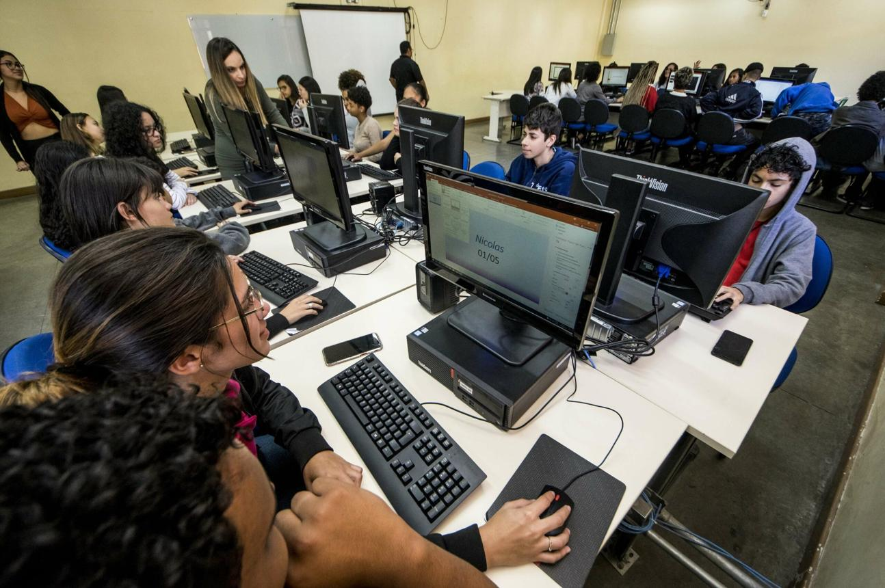

ETE Presidente Getúlio Vargas
Santo Ângelo - RS
Santo Ângelo - RS
Conheça os cursos técnicos oferecidos pela ETE Presidente Getúlio Vargas. Todos os cursos têm duração de 3 anos e são integrados ao Ensino Médio.

Formação completa em sistemas elétricos, automação e manutenção industrial. Prepare-se para atuar em um setor em constante crescimento.

Aprenda sobre projetos, processos de fabricação e manutenção de máquinas. Uma área essencial para a indústria e inovação tecnológica.

Desenvolvimento de sistemas, redes e soluções digitais. O curso que conecta você ao universo da tecnologia da informação.